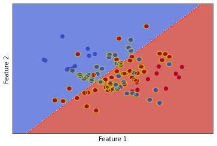
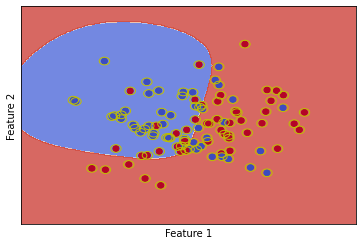

An Intuition for the Support Vector Machine
The support vector machine (SVM) is a widely-used machine learning algorithm. However, it has many components that
interact in complex ways. This article serves to collate these various components, develop an intuition about them,
and explain them in a rigorous and approachable way.
Introduction
Kernel methods are very useful pattern recognition algorithms, and still
see wide use in practise. The most popular kernel method is known as the
support vector machine (SVM) . The SVM has
many valuable properties. These include the fact the optimisation problem
is convex for all viable kernel functions. Additionally, they are efficient
at inference time, and often serve as a more stable alternative to logistic
regression in certain cases. Lastly, they often have better generalisation
performance than deep learning methods in data sparse problems, or very
high dimensional structured problems.
The goal of an SVM, as with all classification algorithms, is to find a
mapping \(f : \mathcal{X} \rightarrow \mathcal{Y}\) using a training
dataset \(S \subset \mathcal{X} \times \mathcal{Y}\). It should be noted
that the typical formulation of the SVM (as discussed in this article) is
only defined for binary classification. The typical methodologies chosen for
multi-class extensions are the one-vs-one or one-vs-all paradigms.
The estimation of \(f\) using the SVM optimisation algorithm can be done in various ways. We will cover the
following concepts of the SVM framework: soft-margin, hard-margin, and the kernel trick. All of them, however, have
the same overarching goal - compute an optimal separating hyperplane. Optimality of the hyperplane in the context of
an SVM is that the hyperplane is defined to be the maximum-margin separating hyperplane. This makes intuitive
sense, since a decision boundary that is far away from the classes as possible seems as if it would perform best in
terms of generalisation performance.
The goal of the work is to develop an intuition about the various components
of the SVM, when to use the various flavours, and why they do or do not work.
The rest of the article is structured as follows. We first derive the primal
optimisation problem for the hard-margin from a geometric perspective. We
then derive the dual equivalent from the primal. Next, we extend this to the
soft-margin case, followed by introducing the kernel trick. Lastly, we run
a series of experiments to demonstrate the different components of the SVM,
and show the affects they have when attempting to model the data. We provide
explanations for each case. Finally, we conclude by summarising the
intuition and foundation of the SVM as laid out in the article.
A Geometric Derivation
The goal of an SVM is to construct a maximum-margin separating hyperplane
between the classes. To do this, consider a vector \(w\) that a perpendicular
to the margin, and a novel point \(\mathbf{x}\), which is the data point we want to
classify. First, we project \(\mathbf{x}\) onto \(\mathbf{w}\): \(\mathbf{w} \cdot \mathbf{x}\).
Since \(\mathbf{w}\) is normal to the hyperplane, this projection is also normal to it.
Thus, we can classify \(\mathbf{x}\) as a positive example if it is far enough away
from the hyperplane, which we can formalise with the following decision rule:
$$\mathbf{w} \cdot \mathbf{x} \ge c$$
for some \(c \in \mathbb{R}\). We rewrite this decision rule as the following
for convenience:
$$\mathbf{w} \cdot \mathbf{x} + b \ge 0$$
with \(b = -c\).
It is important to note that the above decision rule is not stringent enough. In
this current formulation, any separating hyperplane will satisfy the
condition. Thus, we need to introduce additional constraint into the problem in
order to find the maximum-margin hyperplane (not just any hyperplane). To do this,
we introduce the following constraints. For positive examples \(\mathbf{x}_+\):
$$\mathbf{w} \cdot \mathbf{x}_+ + b \ge 1$$
and for negative examples \(\mathbf{x}_-\):
$$\mathbf{w} \cdot \mathbf{x}_- + b \le -1$$
We can condense these 2 constraints into a single constraint using the targets
associated with the input samples, since they are encoded as either \(+1\) or
\(-1\). This is the reason the binary targets for an SVM are encoded as
\(\{+1, -1\}\), instead of \(\{0, 1\}\) or some other encoding.. The single
constraint, which holds for both positive and negative examples, is defined as:
$$y_i (\mathbf{w} \cdot \mathbf{x}_i + b) \ge 1$$.
Since the SVM learns a maximum-margin, we must find an expression for the width
of the margin. From the figure, we see that the width can be computed using the
following:
$$(\mathbf{x}_+ - \mathbf{x}_-) \cdot \frac{\mathbf{w}}{||\mathbf{w}||}$$
It should be noted that \(\mathbf{x}_+\) and \(\mathbf{x}_-\) in the above expression are support
vectors. Support vectors are those vectors which lie exactly on the margin
(i.e. \(y_i (\mathbf{w} \cdot \mathbf{x} + b) - 1 = 0\)). These vectors fully define the hyperplane.
We will denote the set of support vectors for a given SVM as \(P\). Using this
definition of support vectors, simple algebra yields the following expression for
the margin width:
$$\frac{2}{||\mathbf{w}||}$$
Since we want to maximise the margin, we need to solve the following optimisation
problem:
$$\max_{\mathbf{w}, b} \frac{2}{||\mathbf{w}||}$$
subject to
$$y_i (\mathbf{w} \cdot \mathbf{x}_i + b) \ge 1$$
This is mathematically equivalent to the following:
$$\min_{\mathbf{w}, b} \frac{1}{2} ||\mathbf{w}||^2$$
subject to
$$y_i (\mathbf{w} \cdot \mathbf{x}_i + b) \ge 1$$
This optimisation problem is the perfect candidate for Langrange multipliers, and is
is known as the primal formulation of the SVM. It is a classic quadratic programming
problem. The classification rule for the primal is \(f(\mathbf{x}) = \text{sign}(\mathbf{w} \cdot \mathbf{x} + b)\).
We formulate the Lagrangian:
$$\mathcal{L}(\mathbf{w}, b) = \frac{1}{2} ||\mathbf{w}||^2 - \sum_i \alpha_i [y_i (\mathbf{w} \cdot \mathbf{x}_i + b) - 1]$$
Taking the derivative with respect to the hyperplane slope \(\mathbf{w}\), we yield:
$$\frac{\partial \mathcal{L}}{\partial \mathbf{w}} = w - \sum_i \alpha_i y_i \mathbf{x}_i = 0$$
Solving for \(\mathbf{w}\) yields: \(\mathbf{w} = \sum_i \alpha_i y_i \mathbf{x}_i\). The equivalent equation
for the intercept parameter \(b\) is: \(\sum_i \alpha_i y_i = 0\).
We can stop here and solve for the two parameters. However, it is useful to convert the
above primal formulation into its dual counterpart. This is because sometimes
it is more efficient to solve the one than the other. Formally, we are solving for
\(d\) parameters in the primal, and for \(N\) in the dual. Thus, typically if
\(N << d\), it is generally more efficient to solve the dual than the primal.
To construct the dual, we plug the equations obtained by taking the partial
derivatives with respect to \(\mathbf{w}\) and \(b\) back into the Lagrangian. The yields
(after some algebra) the following:
$$\mathcal{L}(\alpha_i) = \sum_i \alpha_i - \frac{1}{2} \sum_i \sum_j \alpha_i \alpha_j y_i y_j \mathbf{x}_i \cdot \mathbf{x}_j$$
subject to
$$\alpha_i \ge 0, \sum_i \alpha_i y_i = 0$$
This dual formulation has the following classification rule:
\(f(\mathbf{x}) = \sum_i \alpha_i y_i \mathbf{x}_i \cdot \mathbf{x} + b\). The equivalent condition within the
dual formulation for support vectors is \(\alpha_i \neq 0\). Fortunately, for most
problems we only have few support vectors (i.e. \(\alpha_i = 0\) for most samples
in the dataset). An important note on support vectors is that, generally, the smaller
the ratio \(\frac{|P|}{|S|}\), the better the generalisation performance. In other words,
the fewer support vectors with respect to the number of samples in the training set,
the better. This makes intuitive sense, since if the SVM can construct a hyperplane
with few samples, it is confident about the class labels about the majority of the
training examples.
The above formulations of both the primal and dual are known as the hard-margin
SVM. This is important since the assumption being made is that the classes
can be separated perfectly using a hyperplane. This strong assumption of perfect
separation often does not hold in practise, and there are ways of to accommodate
for this. These will be discussed in the next section.
The Soft Margin

The soft-margin SVM is a natural extension of the soft-margin
variant. The main disadvantage of the hard-margin SVM is its strong
assumption of perfect separation of the classes being possible. This is
often not the case in practise. As such, soft-margin SVMs introduce so-called
slack variables to accommodate for this. The slack variables essentially
allow the SVM some leeway in its where the data points must be relative to the
margin. Formally, the primal formulation of the soft-margin variant of the SVM
is given by:
$$\min_{\mathbf{w}, b, \xi_i} \frac{1}{2} ||\mathbf{w}||^2 + C \sum_i \xi_i$$
subject to
$$y_i (\mathbf{w} \cdot \mathbf{x}_i + b) \ge 1 - \xi_i$$
where \(\xi_i\) are the slack variables, and \(C \in \mathbb{R}\). It is clear
from the constraint how the leeway is introduced into the optimisation problem.
The constraint is less stringent by allowing for a slack of \(\xi_i\) units for
where point \(\mathbf{x}_i\) lies with respect to the hyperplane.
The dual equivalent within the soft-margin setting is given by:
$$\min_{\alpha_i} \frac{1}{2} \sum_i \sum_j \alpha_i \alpha_j y_i y_j \mathbf{x}_i \cdot \mathbf{x}_j - \sum_i \alpha_i$$
subject to
$$0 \le \alpha_i \le C, \sum_i \alpha_i y_i = 0$$
Clearly, we can introduce the leeway within the primal without having to solve for
the additional parameters in the form of the slack variables \(\xi_i\).
Now that we have found a way to find a hyperplane, even when the classes
are not perfectly separable, it seems we are done. However, this is still
not sufficient for the SVM to be able to model a variety of real-world
problems. The main disadvantage with the soft-margin formulation as
derived above is that it still assumes the data is linearly separable.
This is why this formulation is known as the linear SVM.
It assumes a hyperplane (with some misclassification leeway) is sufficient to
separate the classes adequately. This assumption often does not hold, as
most real-world data is non-linear. A technique, known as the
kernel trick is a way of allowing the SVM is model linearly
non-separable data, with minimal changes to the optimisation problem.
The Kernel Trick
A kernel function is a function \(k : \mathcal{X} \times \mathcal{X} \rightarrow \mathbb{R}\).
These are two main conditions for \(k\) to be a valid kernel for the SVM. Firstly,
it should be a Mercer kernel. Interestingly, if \(k\) is not a Mercer kernel, the SVM
optimisation problem is no longer convex. Secondly, the kernel should be able to be
written as a feature map \(\phi : \mathcal{X} \rightarrow \mathcal{V}\) such that:
$$k(\mathbf{x}_i, \mathbf{x}_j) = \langle \phi(\mathbf{x}_i), \phi(\mathbf{x}_i) \rangle$$
Now, recall the (without loss of generality) the objective function for the
dual formulation for a soft-margin linear SVM:
$$\frac{1}{2} \alpha_i \alpha_i y_i y_j \mathbf{x}_i \cdot \mathbf{x}_j - \sum_i \alpha_i$$
Note that the first term of this objective function - and thus the whole optimisation
problem for the SVM, depends only on dot products between the input vectors.
This is where the kernel trick comes into play. We can replace these dot products with
the corresponding kernel values using \(k(\mathbf{x}_i, \mathbf{x}_j)\), since the kernel is defined
(from above) to return exactly the dot product of a transformed version of the input
vectors. The key is that this transformation is necessarily non-linear. This is what
equips the SVM with the ability to model non-linear data. The make the following
small change to the objective function:
$$\frac{1}{2} \alpha_i \alpha_i y_i y_j k(\mathbf{x}_i, \mathbf{x}_j) - \sum_i \alpha_i$$
and the decision rule changes similarly to: \(f(\mathbf{x}) = \sum_i \alpha_i y_i k(\mathbf{x}_i, \mathbf{x})\).
This means that the solution to the dual now depends on \(k(\mathbf{x}_i, \mathbf{x}_j)\) for all
\(i, j\). This is known as the Gram (or kernel) matrix. However, this introduce a
bottleneck. If \(n := |S|\) is too large, then it becomes infeasible to compute an
\(n \times n\) Gram matrix. In such situations, it becomes more efficient to solve
the primal.
Experiments
The goal of the following experiments is to develop an intuition of what to tweak,
and when to tweak. We will show the various failure modes that can be encountered,
why they occur, and how to mitigate them.
The experimental setup is as follows. For demonstration purposes, only consider
binary classification, and feature vectors in 2D real vector space. Formally,
\(\mathcal{Y} = \{+1, -1\}\), and \(\mathcal{X} = \mathbb{R}^2\). Additionally,
we only use synthetic, toy data that we generate to show the various concepts.
We use the scikit-learn implementation of the SVM through the SVC
API. Since this implementation only learns a soft-margin SVM, in order to simulate
hard-margin SVMs, we simply set the parameter \(C\) to a very small positive value.
Lastly, we define the proportion of the number of support vectors to number of data
samples as:
$$\eta := \frac{|P|}{|S|} \in [\frac{|Y|}{|S|}, 1]$$
This serves as an important metric in our analyses. The above range for \(\eta\)
holds for any generic finite set of classes \(\mathcal{Y}\). In our binary
classification case, we have that \(\eta \in [\frac{2}{|S|}, 1]\). Typically, the
lower \(\eta\) is, the better generalisation performance will be. Of course there
are cases where this does not hold, but it is a good rule-of-thumb.
In the above figure we run a hard-margin linear SVM on a dataset that is
linearly separable. In such a setting, the hyperplane can be completely defined
by only two support vectors (highlighted in yellow). In this case we have that
\(\eta\) takes on its minimum value (\(0.02\) in this case).

In the above figure, we run the same hard-margin linear SVM on a dataset with
linearly non-separable classes. In this case, the SVM is not defined (the
optimisation will not converge since the assumption of perfect separation
is broken). However, the implementation used forces converges. From the figure,
we get an idea of how such an SVM behaves in this scenario. The separating
hyperplane found seems to be a poor choice, from just visual inspection. Further,
\(\eta\) takes on its maximum possible value of \(1\). This is a strong sign
that something has gone wrong with the SVM optimisation, or that a reliable
hyperplane is simply not learnable for this particular dataset and SVM flavour.

In order to learn a more sane hyperplane, we again run a linear SVM, but
the soft-margin variant. This will allow some leeway for misclassification
in the effort of finding a sane and reliable hyperplane. From visual inspection,
the hyperplane found seems to fit the data better, given its distribution. Further,
(\eta\) has decreased to \(0.8\), which means fewer data points are used as support
vectors to define the hyperplane. This is promising, however, this is still a
very high value for \(\eta\).

As such, we introduce a kernel into the modelling process. We choose the radial
basis function (RBF) kernel for all experiments. However, we first show the case
of using a kernel with a hard-margin SVM, as seen in the figure above. We have a
similar problem to the hard-margin linear SVM. \(\eta\) again takes on its
maximum possible value of \(1\), since all data points are used as support vectors.
What this essentially means is that even in the projected feature space, the
classes are still not perfectly separable with a hyperplane. Further, the decision
boundary is now non-linear, which is what we expect when using a non-linear kernel
function such as the RBF kernel.

Finally, we train an RBF soft-margin SVM on the same data. This is the type of
SVM that is typically used in practise, as it is the most flexible. We can see that
we have a more sensible non-linear decision boundary. Further, \(\eta\) takes on a
lower value of \(0.59\). Importantly, this is lower than the soft-margin linear SVM
which had \(\eta = 0.8\). This is good empirical evidence that the data is non-linear,
since it is best modelled using a non-linear SVM.
http://www.robots.ox.ac.uk/~az/lectures/ml/lect3.pdf
https://cel.archives-ouvertes.fr/cel-01003007/file/Lecture3_Linear_SVM_with_Slack.pdf